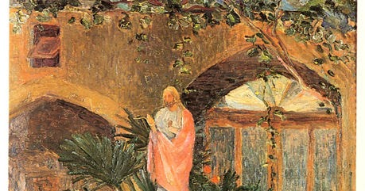
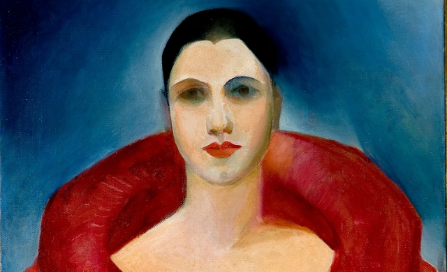
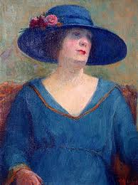

Tarsila do Amaral foi uma pintora e desenhista brasileira, uma das artistas centrais da pintura brasileira e da primeira fase do movimento modernista brasileiro, ao lado de Anita Malfatti. Seu quadro Abaporu, de 1928, inaugurou o movimento antropofágico nas artes plásticas.
Juntamente com Candido Portinari, Di Cavalcanti, José Pancetti e alguns outros pintores, Tarsila; dona de referência bibliográfica invejável – creio que sobre ela e sua arte todos os aspectos importantes e menos importantes já tenham sido explorados – faz parte da própria história da arte moderna brasileira.
A ‘Caipirinha’ vestida por Jean Patou e (Paul) Poiret, viveu a prodigiosa efervescência e a desvairança dos anos ’20 no Brasil e na França, e deles tirou grande proveito.
Nasceu em 1 de Setembro de 1886, na Fazenda São Bernardo, em Capivari, interior de São Paulo, de lar fisiocrata, patriarcal, autoritário e legítimo representante da potente oligarquia cafeeira paulista – já herdeira de apreciável fortuna e diversas fazendas, nas quais Tarsila passou a infância e adolescência, foi-lhe ensinado a ler, escrever, bordar e falar francês.
Tarsila do Amaral já foi retratada como personagem no cinema e na televisão, interpretada por Esther Góes no filme "Eternamente Pagu" (1987), Eliane Giardini nas minisséries "Um Só Coração" (2004) e "JK" (2006).
A artista também foi tema da peça teatral Tarsila, escrita entre novembro de 2001 e maio de 2002 por Maria Adelaide Amaral. A peça foi encenada em 2003 e publicada em forma de livro em 2004. A personagem-título foi interpretada pela atriz Esther Góes e a peça também tinha Oswald de Andrade, Mário de Andrade e Anita Malfatti como personagens.
Uso de cores vivas: Tarsila foi uma modernista, pintou o Brasil, desrespeitou normas clássicas da pintura tradicional e encheu suas telas de cores, muitas cores. Tarsila conseguiu traduzir em cores vibrantes todas as sombras de um país. Influência do cubismo (uso de formas geométricas).
Abordagem de temas sociais, cotidianos e paisagens do Brasil. Estética fora do padrão (influência do surrealismo na fase antropofágica)
- Pátio com Coração de Jesus (Ilha de Wright) - 1921
- A Espanhola (Paquita) - 1922
- Chapéu Azul - 1922
